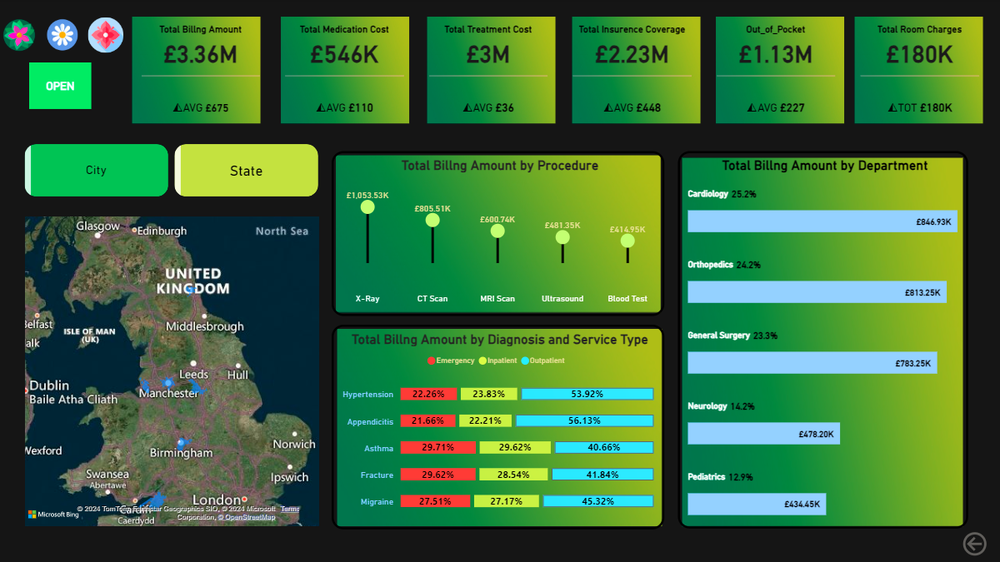

The project aimed to create an interactive and dynamic healthcare analytics dashboard to monitor billing amounts, treatment costs, patient visits, and overall performance across different departments, procedures, states, and doctors. The goal was to provide a comprehensive view of healthcare provider operations, enabling better decision-making and identification of trends in billing, patient care, and resource utilization.
Power BI: for data visualization and interactive dashboard creation.
Data Modeling and DAX (Data Analysis Expressions): were used for complex calculations such as billing amount comparisons, averages, and year-over-year growth rates.
Slicers and filters: for interactive data exploration and detailed insights.
Custom Visuals: (bar charts, line graphs, maps, etc.) to represent data in an easy-to-understand format.
Billing and Cost Analysis:
Displays total billing amounts, medication costs, treatment costs, insurance coverage, out-of-pocket expenses, and room charges.
Showcases average billing amounts per visit for a quick assessment of overall financial performance.
Geographical and Demographic Insights:
Visual representation of total billing amounts by city and state to identify high-revenue regions.
Total billing amounts broken down by departments, procedures, and diagnosis types to provide a detailed view of service contributions.
Procedure and Diagnosis Tracking:
Billing amounts are categorized by different procedures (e.g., CT scan, X-ray) and diagnoses (e.g., hypertension, asthma), along with service types (emergency, inpatient, outpatient), helping to identify the most common and costly treatments.
Trends Over Time:
Yearly, quarterly, and month-wise analysis of billing amounts, with comparisons to previous periods, enables the identification of trends, growth patterns, and seasonal variations.
A detailed breakdown of billing amounts by weekdays vs. weekends provides insights into daily operational dynamics.
Doctor and Patient Analysis:
Highlights patient visits, length of stay, and department-wise visits categorized by emergency and non-emergency cases.
Displays information about doctors, including their average ratings, to monitor doctor performance and patient care quality.
Interactive Filters and Visualizations:
Users can interact with the dashboard using filters for state, visit types (emergency/non-emergency), and department selection, making the data exploration tailored and dynamic.
Key metrics like total visits, total admitted, and outpatient numbers are presented to give a complete picture of patient care.
Improved Financial Insights: The dashboard provided a comprehensive view of billing and treatment costs, enabling better financial management and revenue tracking.
Enhanced Decision-Making: The ability to filter data by departments, procedures, states, and doctors allowed healthcare managers to identify areas of efficiency and potential improvement.
Operational Efficiency: Identifying peak billing periods, top-performing departments, and doctors helped streamline healthcare services and optimize resource allocation.
Informed Patient Care Analysis: By visualizing patient visits by department and length of stay, the dashboard helped healthcare providers understand patient demographics and tailor services accordingly.
The project successfully provided a holistic view of the healthcare provider’s performance, contributing to improved financial oversight, operational efficiency, and data-driven decision-making.